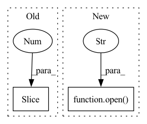

Pattern ID :17874
Before Change
def _read_physician_report(file_path):
physician_report = np.nan
// check if there is a report to add to the description
report_path = "_".join(file_path.split("_")[:-1 ]) + ".txt"
if os.path.exists(report_path):
with open(report_path, "r", encoding="latin-1") as f:
physician_report = f.read()After Change
// somewhere in the corpus, encoding apparently changed
// first try to read as utf-8, if it does not work use latin-1
try:
with open( txt_file, "r" , encoding="utf-8") as f:
report = f.read()
except UnicodeDecodeError:
with open(txt_file, "r", encoding="latin-1") as f:In pattern: SUPERPATTERN
Frequency: 3
Non-data size: 2
Instances Fragment ID: 58586783
Project Name: braindecode/braindecode
Commit Name: 11abf35c2fc4dd71f4fecc47c5486e67ca1355cf
Time: 2021-04-28
Author: l.gemein@googlemail.com
File Name: braindecode/datasets/tuh.py
M Class Name: AnonimousClass
N Class Name: AnonimousClass
M Method Name: _read_physician_report(1)
N Method Name: _read_physician_report(1)
M Parent Class:
N Parent Class:
M File Name: braindecode/datasets/tuh.py
N File Name: braindecode/datasets/tuh.py
M Start Line: 132
M End Line: 138
N Start Line: 132
N End Line: 147
Before Change
import matplotlib.pyplot as plt
for i in range(100):
plt.plot(xs[i, 1 :, 0], xs[i, 1:, 1])
plt.show()
return xs, usAfter Change
with open(path+"xs.pkl", "rb") as f:
xs = pickle.load(f)
with open( path+"us.pkl", "rb" ) as f:
us = pickle.load(f)
elif system == "quadrotor": Fragment ID: 58586782
Project Name: mit-acl/nn_robustness_analysis
Commit Name: c9b51e13d331027e4154999bc43026a9daf05ae0
Time: 2021-11-09
Author: mfe@mit.edu
File Name: nn_closed_loop/nn_closed_loop/utils/nn.py
M Class Name: AnonimousClass
N Class Name: AnonimousClass
M Method Name: load_data(1)
N Method Name: load_data(0)
M Parent Class:
N Parent Class:
M File Name: nn_closed_loop/nn_closed_loop/utils/nn.py
N File Name: nn_closed_loop/nn_closed_loop/utils/nn.py
M Start Line: 91
M End Line: 113
N Start Line: 96
N End Line: 126
Before Change
start = time.time()
batch_size = len(batch)
feat_list = []
for idx, egs in enumerate(batch[1: ]):
try:
p = subprocess.Popen(" ".join(egs.wav), stdout=subprocess.PIPE, shell=True)
//samples, _ = librosa.load(io.BytesIO(p.communicate()[0]))After Change
return None, None
batch_size = len(batch)
feat_list = []
devnull = open( os.devnull, "w" )
for egs in batch:
try:
p = subprocess.Popen(" ".join(egs.wav), stdout=subprocess.PIPE, shell=True, stderr=devnull)
samples, _ = soundfile.read(io.BytesIO(p.communicate()[0])) Fragment ID: 58586787
Project Name: idiap/pkwrap
Commit Name: 560ef7caf6df3bde36a614c164d0b83a4db5b9ee
Time: 2021-03-12
Author: srikanth.madikeri@idiap.ch
File Name: pkwrap/chain/egs_wav2vec2.py
M Class Name: AnonimousClass
N Class Name: AnonimousClass
M Method Name: prepare_e2e_minibatch(1)
N Method Name: prepare_e2e_minibatch(1)
M Parent Class:
N Parent Class:
M File Name: pkwrap/chain/egs_wav2vec2.py
N File Name: pkwrap/chain/egs_wav2vec2.py
M Start Line: 38
M End Line: 53
N Start Line: 40
N End Line: 41